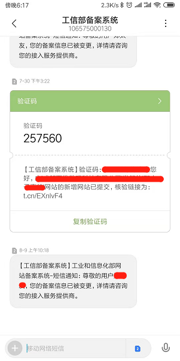
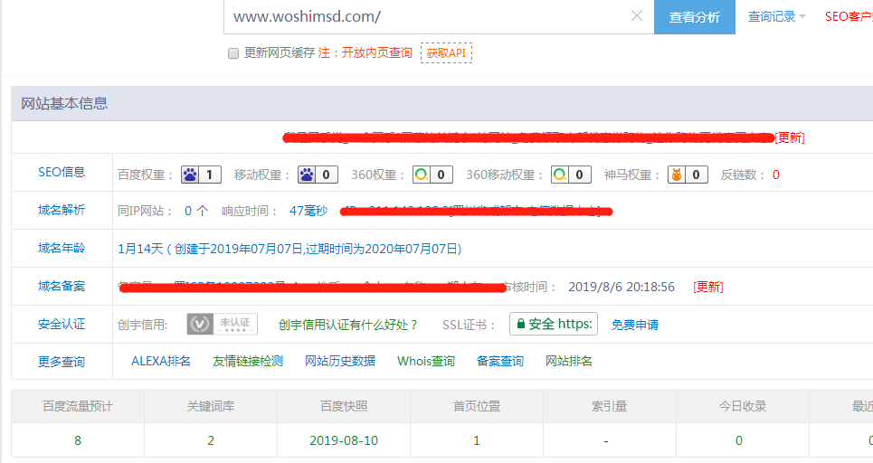
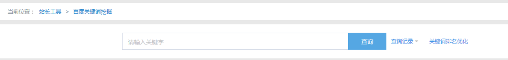

之前操作了一个IDC网站，不到1个月的时间把网站的权重从0做到了1，本来想写篇文章分享相关的操作经验。后来因为网站整体规划的原因，IDC网站需要关闭一段时间做备案的更新，排名肯定就会掉了，然后怕大家看到我后面网站的数据不是我分享说的样子，说我骗人，就没写那次的分享经验。
今天无意间通过站长工具查询新网站的关键词排名情况，发现权重稳定在了1，还是有点小激动，因为从新备案通过到新网站收录到有排名，前后时间总共不到12天，而且对技术要求不高，用的也是正规SEO方法，相信这篇文章对做SEO网站优化排名的站长朋友是有一定帮助的。
先申明，个人也是小白，SEO大神请绕过，不喜勿喷。

2019年8月9号备案通过

截至2019年8月21日，百度PC权重达到了1
下面分享下我是如何操作整个网站的优化过程的，感兴趣的朋友可以继续往下看
1. 关键词优化的第一步，学会挖掘有访问量同时优化难度低的关键词
很多网上流传的文章，说内链为王，外链为皇，要定期围绕TDK更新网站内容，这恐怕是对SEO新手的一个误导，或者说只说对了一部分。如果关键词没有选对，你再怎么发文，再怎么更新文章，搜索引擎对你也不待见。选词是优化成功的一半或者以上，这就和做新媒体运营的朋友一样，标题的选题是文章成功的一半是一样的道理。
说这么多，那么有什么简单的方法可以选取比较理想的关键词呢
可以利用的工具很多，比如百度指数、百度关键词规划师、5118、站长工具等等，这里小编主要经常用的是站长工具，下面的思路主要围绕站长工具展开。
首先找到同行网站
这里举一个例子，比如可以根据网站的主题，比如自己公司所开展的业务或者产品，直接在百度等搜索引擎输入对应关键词搜索结果，能发现的信息有很多，比如广告个数、首页排名网站个数、百度系网站个数、各大平台网站个数等，如果这些指标比较高，那么你输入的这个关键词是很难排上去的，因为你自己优化操作的网站就是一个很小的网站，没法和他们那些大网站竞争。
然后列一个同行网站清单，把每个同行网站里面所包含的标题、描述都写出来，把里面的核心词都找出来，然后通过站长工具的“百度关键词挖掘”工具，可以提炼出大量的有指数的关键词（有指数意味着有人访问，网站的优化才有意义）。
把这些有指数的关键词重新输入到搜索引擎，做一遍复查，不容易优化到搜索引擎首页的关键词可以剔除掉，然后保留既可以优化到搜索引擎首页，同时又有访问量的关键词。
组合TDK，根据上面列出的同行网站清单里面的标题、描述以及筛选出来的可优化关键词，组合成一个新的TDK，看到这里，相信大家应该知道网站优化的核心了，这里写出来的标题和描述一定是原创的，而且是有价值的标题和描述。这里需要注意的是，标题尽量用“_”隔开，尽量不要关键词重复，描述也尽量语句通顺。

通过站长工具的“百度关键词挖掘”工具提取有搜索指数的关键词
2. 做好网站的基础建设
网站的基础建设包括，比如网站打开是否流畅、是否是响应式网站、TDK设置是否完整、alt属性是否有设置、不太重要的链接是否有加上nofollow标记、h1标签是否有设置、在适当的位置是否增加了相关文章等等。
如果把第一步的关键词规划理解为理论，第二步就是实践了。理论写的不好有问题，实践再怎么操作，都看不到效果；理论写的再好，实践环节有问题，所起到的效果，也就只能是事倍功半了。
3. 定期更新网站内容或者更新外链
大家看到了吧，内链和外链建设这个是最后一步了，而且也并不是最重要的一步。如果把上面的两个步骤做得很好，第3步甚至可以不用管，这样可以减少很大的工作量。
当然，如果要想权重持续的提升，让网站的访问量越来越大，第3步又是最重要的一步了，我分享的第1、2步只能算是一个投机取巧的方法，有很多朋友不懂SEO，就耐心的写点原创文章，也是可以获得很大的曝光。权重的持续提升还是需要大量的长尾关键词带来流量的，长尾关键词的排名就得依靠大量的文章了。
写到最后，很多人说现在自媒体横行，短视频霸道，小程序大火，做网站这种还有价值没有。这里小编想说，任何一个行业存在都有他存在的道理，你只要愿意在一个你感兴趣的行业深耕，都是可以闯出一番自己的天地。
最近的新闻报道，说头条要做搜索，百度的市场份额达到了70%以上，不管这些信息是真是假，从自己的体会来看，我们平时用搜索的频次还是很高的，只要搜索存在，网站的优化就有价值。拿百度来说，搜索引擎展现内容的前10名，再怎么排都排不满他们自己的百家号或者小程序产品的，如果是这样，他就不叫搜索引擎了。
当然，SEO只是一个思维，核心的点是要学会数据分析，如果你有更高的技术能力，完全可以把这种思维用到其他的新媒体运营、小程序运营等领域。只是小编个人能力和精力有限，能把网站经营好已经不错了，如果后面有更多的精力，肯定也会拓宽领域的。
本文由公号“太友帮”原创，转载请注明出处